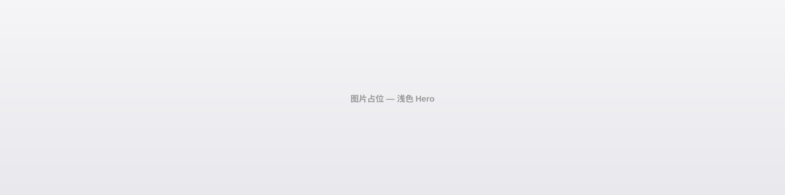
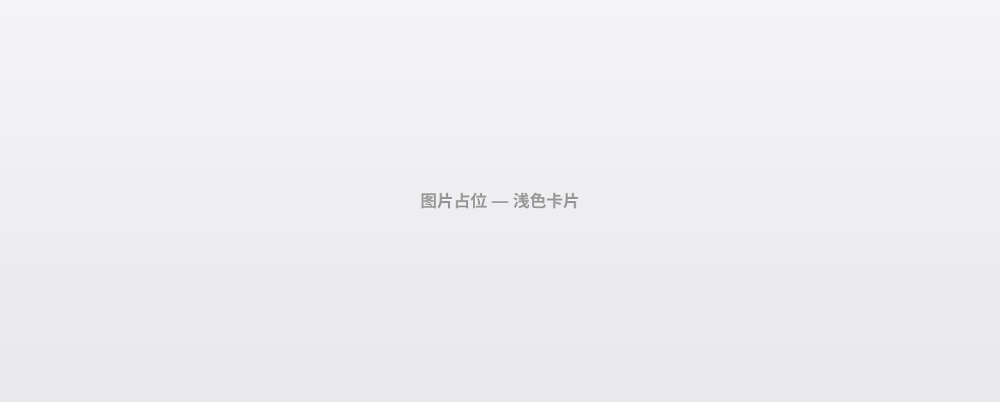

−
100%
+
⌂ 重置
Space
+拖拽 ·
⌘
+滚轮
← 返回首页
🔌 节点
✎ 编辑模式 — 点击色块改色 · 点击图片替换
🎨 Design System · 无限画布
从 DESIGN.md v1.5.0 自动映射的交互式设计规范浏览器
自由缩放 / 拖拽探索 · 实时响应设计令牌
✨ 鼠标拖拽平移 · 滚轮缩放 ·
字体家族加载中...
🎨 颜色系统
🔵 品牌主色 · 5 级色阶
⚫ 中性色板
✨ 语义颜色（亮色 / 暗色模式适配）
🟠 辅助色板
🎨 基于 DESIGN.md 色阶 + 语义令牌，动态映射至组件
🔤 排版系统
📐 字体家族加载中...
🧩 组件预览
Buttons · 胶囊形圆角
主要按钮
次要按钮
轮廓按钮
导航栏 · 毛玻璃效果
🍎
Mac
iPad
iPhone
Watch
AirPods
Hero 图片区 · 可替换

产品卡片图 · 可替换

⚡ 交互组件实时响应，拖拽画布任意查看细节
📐 页面结构
Hero Section · 全幅视口
卡片
卡片
🏗️ 源自 DESIGN.md 页面架构定义（Layout blueprint）
📏 间距系统
📐 间距基于视觉比例调整，非固定 4px/8px 网格
✨ 拖拽探索 · 无限延伸
🎯 设计系统 · 无缝集成